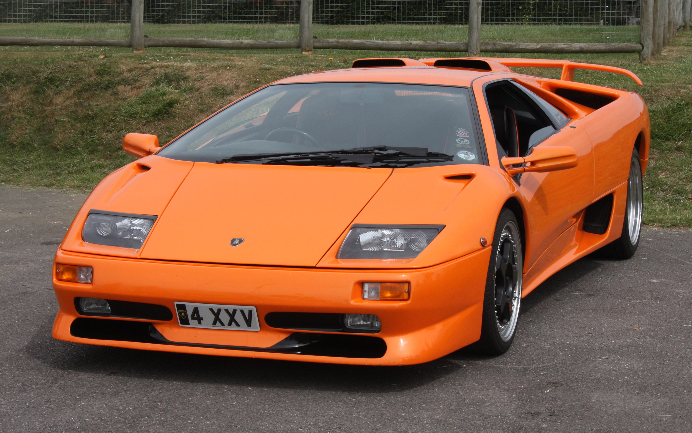
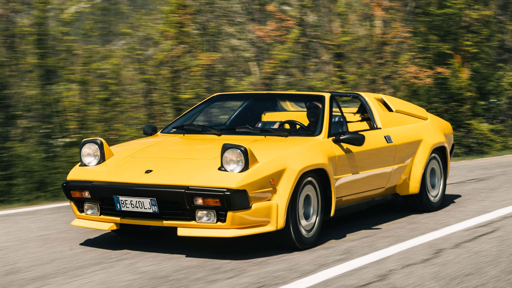
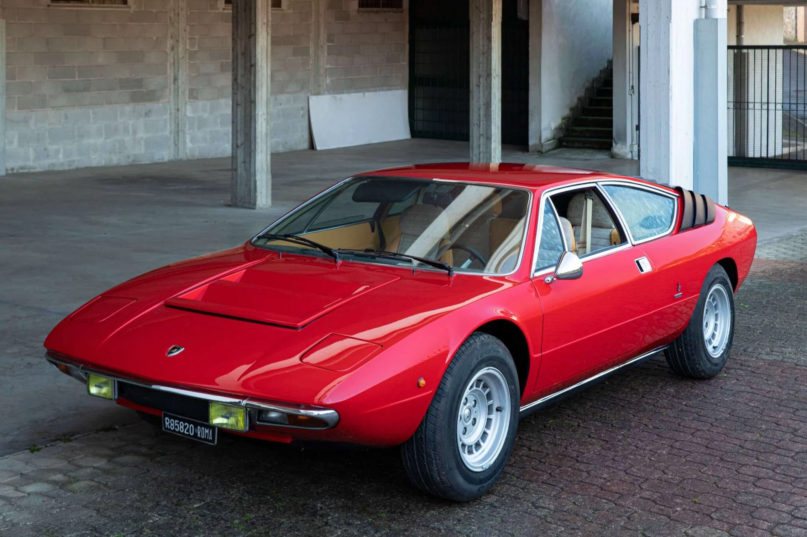

The Diablo was the direct successor to the legendary Countach and carried the torch of Lamborghini's V12 supercar lineage into the 1990s. Originally styled by Marcello Gandini and refined by Chrysler's design team, the Diablo featured an aggressive, muscular body that pushed boundaries even further than its predecessor. At launch it was powered by a 5.7-litre V12 producing 492 horsepower, later growing to 530 hp in the VT and SV variants and reaching 595 hp in the GT version. The Diablo was the first Lamborghini to break the 320 km/h top speed barrier. Four-wheel drive was introduced with the VT variant in 1993. Produced from 1990 to 2001 with approximately 2,903 units built.

The Jalpa was the spiritual successor to the Urraco, serving as Lamborghini's entry-level model through the 1980s. It was powered by a mid-mounted 3.5-litre V8 engine producing 255 horsepower, giving it a top speed of around 235 km/h and a 0–100 km/h time of approximately 6.8 seconds. The Jalpa's targa-top removable roof panel made it a unique and desirable open-air driving experience. It was produced from 1981 to 1988 with only 410 units built. The Jalpa is perhaps best known internationally for its appearance in the James Bond film "Octopussy."

he Urraco was Lamborghini's attempt to build a smaller, more accessible sports car to compete with the Ferrari Dino and Porsche 911. It featured a mid-mounted V8 engine of either 2.0, 2.5, or 3.0 litres depending on the variant, producing between 182 and 265 horsepower. Designed by Marcello Gandini, the Urraco had a sleek, compact wedge shape that previewed the design language that would later define the Countach. Built between 1972 and 1979, only 791 units were produced across all variants. It remains one of the more underrated and underappreciated classic Lamborghinis.

Ferruccio Lamborghini always imagined a four-seater that would suit a driver passionate about beautiful, powerful cars, but who was bound by the need for space and comfort. His company produced the first Lamborghini to meet that brief when it launched the Espada 400 GT at the Geneva Show 1968. Known simply as the Espada when it reached production, the car met the design brief to carry four passengers and their luggage in some comfort, while also providing power and performance that was now expected of a Lamborghini. It is a 4-litre v-12 tuned to deliver 325cv.